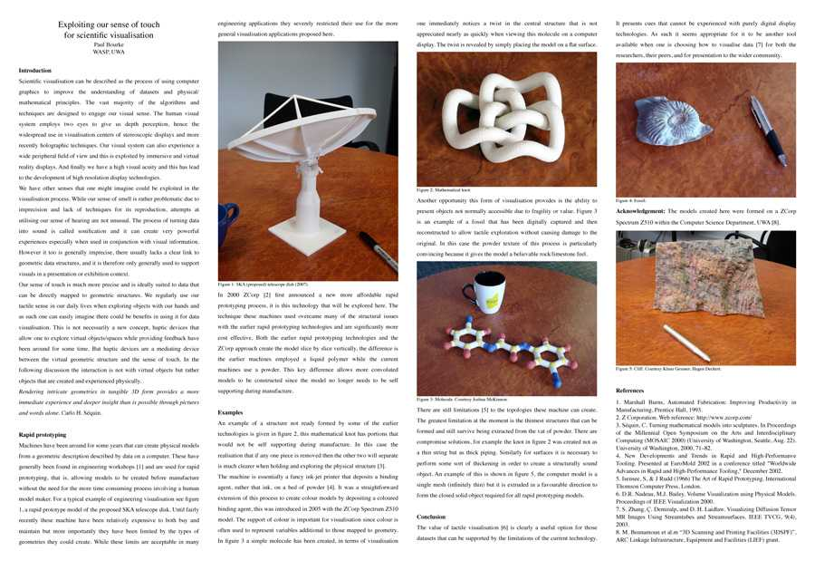

Exploiting our sense of touch
for scientific visualisation
iVEC eResearch Forum
February 2008
P.D. Bourke
This poster proposes that current rapid prototyping machines can be
of benefit to some scientific visualisation problems. A brief introduction
to the field is given along with a number of examples. When presented at the
forum a number of models were available to explore by attendees.
poster.pdf

|